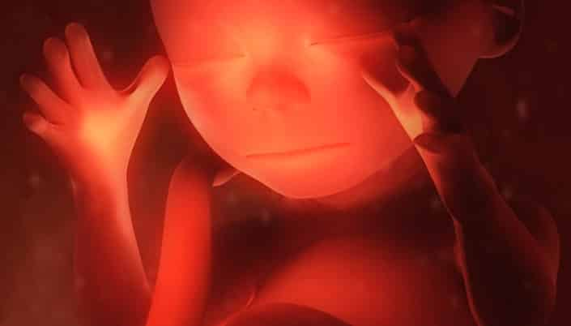
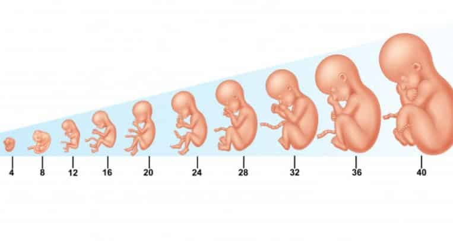

Entendemos por anatomía del desarrollo a aquel campo de embriología que se encarga esencialmente de cada uno de los cambios morfológicos que se dan en las células, tejidos y órganos en la vida del ser humano, pero partiendo desde su desarrollo prenatal y cómo se enlazan las células procedentes de los progenitores hasta que el futuro ser llega a su etapa de adulto.
Conforme a lo evidenciado a través de diferentes estudios científicos, se llegó a la conclusión que a mediante la comprensión de la anatomía del desarrollo se pueden conocer cada uno de los cambios morfológicos y del crecimiento de algún organismo desde el momento de la fecundación hasta cuando se forman sus células, el nacimiento, desarrollo y envejecimiento del ser humano.
Por otro lado, la anatomía del desarrollo también sirve para tratar la forma y la función de los órganos de los embriones, de la perinatología que se basa en las transformaciones dadas durante la semana 28 de gestación hasta llegar a los 28 días del nacimiento del bebé. Igualmente, evalúa los cambios que se dan en los primeros meses del ser humano hasta que llega a la pubertad.
Luego se ocupa de la manera en que funcionan los órganos a partir de los 60 años de edad y finalmente, sirve para detectar cada una de las anomalías que se forman en el cuerpo; bien sea por factores internos o externos, en este caso ambientales.
El origen de la anatomía del desarrollo va en conjunto con los principios biológicos y médicos enfocados en el desarrollo prenatal de la vida, orientándose más hacia el estudio de la vida del ser humano.
Del mismo modo, antes de revelar el principio de la anatomía del desarrollo, es importante destacar que la embriología es sin duda una ciencia biológica que además de estudiar los órganos prenatales en su estado prenatal, también se encarga de comprender y dominar cada una de las leyes que lo regulan y se valen de ellos.
Posteriormente a investigaciones científicas realizadas, diversos científicos sintieron curiosidad por conocer a profundidad lo que se refiere con la anatomía del desarrollo y la manera en la que esta se asemeja con los fenómenos derivados en la vida postnatal, de ahí el origen de este tipo de anatomía.

Se da desde el momento de la fecundación hasta llegar a la octava semana que pasa a ser la etapa fetal. Asimismo, entre las partes que se dan en este punto, tenemos a la gastrulación que es donde se forma la blástula y las capas germinales del embrión que son el ectodermo, mesodermo y el endodermo.
En cuanto a los órganos que se crean durante la tercera y la cuarta semana de gestación, se percibe que el corazón posee un tamaño de 2 milímetros, pero desde su creación no es hasta el día 22 que empieza el proceso de explote de la vida. Cuando llega la cuarta semana, el corazón tiene una dimensión de 4 milímetros y se crea el cordón umbilical que se pone en contacto con la placenta.
En la quinta semana se forma la epidermis y la dermis, de igual forma surgen los esbozos, brazos, piernas, glándulas mamarias, las vesículas. También, durante esta semana se crea las gónadas primitivas, sin embargo, es difícil conocer en tan poco tiempo el sexo del futuro bebé. Igualmente, se forma la sangre, los orificios nasales, las manos, pies, los ojos se están formando, y el tamaño del feto es de 8 milímetros a 0,8 centímetros. En esta fase también se desarrolla la cabeza, aunque esta se ve grande en balance con el cuerpo
En cuanto a la sexta semana, se puede notar que el embrión tiene el tamaño de un grano de lenteja, también se le ve las muñecas, codos y unos rayos digitales que dan indicios a los dedos y se forman los pulmones e intestinos, al igual que las fibras de los respectivos músculos.Asimismo se forma el pigmento retinal de los ojos, los pabellones de las orejas, los conductos auditivos, el labio superior, paladar y el desarrollo de las extremidades. En este punto, el feto tiene un peso de 75 gramos.
En la semana siete el futuro bebé deja de ser un embrión y se transforma en feto, aquí los tejidos y órganos que se han desarrollado comienzan a madurar. Se percibe que la cola del embrión cae. Por otro lado, el corazón comienza a ejercer su labor, el esqueleto toma forma, la placenta continúa formándose, el cordón umbilical crece, el cerebro tendrá alrededor de unos mil millones de neuronas, los párpados se perciben y el peso es de 85 gramos.
Entre la semana 4 y la 7 se puede evidenciar en la anatomía del desarrollo del aparato respiratorio la vasculatura pulmonar, cartílago, músculo liso y tejido conectivo paralelamente. Igualmente se evidencia la formación traqueal y la carina.
Por otro lado, se encuentra el período Pseudoglandular (semana 7 y 17) aquí se forman los bronquiolos. Entre la semana 17 y 27 sucede la fase de Canalicular, se forman los neumocitos tipo I en y además, se crea la barrera alveolocapilar que hace que se de en el periodo postnatal el intercambio gaseoso. Ahora, en la semana 28 y 36 se deposita fibra elástica para formar a futuro los septos secundarios.
Finalmente tenemos la fase alveolar que corresponde la semana 36 hasta los 3 años, aquí se da la maduración microvascular, se detalla la hiperplasia alveolar que se da hasta llegar a los 3 años y posterior a ello se encuentra la hipertrofia o aumento de tamaño alveolar que sucede hasta que el ser humano consigue los 8 años de edad como mínimo.
Este desarrollo sucede en la semana 4 se forma el tronco celíaco; mesentérica superior e inferior; el intestino anterior, medio y posterior. En este sentido, en esta semana el endodermo y el saco vitelino secundario se trasladan al embrión formando un conducto entre la madre y el futuro bebé. Es importante destacar que los órganos del endodermo y el saco vitelino son los creadores del intestino. Asimismo, el endodermo y el intestino primitivo dará inicio al tubo digestivo y a las vías biliares. Además se formará el parénquima del hígado y páncreas.
Es un indicio importante, ya que a partir de ella se conocerá el estado de la función de este órgano desde que está en la etapa embrionaria. En este sentido, lo primero que se forma en la etapa embrionaria es el aparato cardiovascular y, por ende, el corazón es el primer órgano que empieza a funcionar. Una de las razones por las que el corazón es considerado como la primera parte en formarse dentro del cuerpo, es que como el embrión tiende a evolucionar velozmente, necesita conseguir dosis de nutrientes y oxígeno, además de eliminar los residuos que no son requeridos.
Por otro lado, es importante destacar que el corazón inicia su desarrollo a partir de 18 o 19 días después de la fertilización y además, la zona exacta donde empieza su labor es en el mesodermo, donde se localizan células mesodérmicas que se hallan en el polo cefálico que se designa campo cardiogénico.
Posteriormente, otras secciones de la anatomía del desarrollo del corazón son sin duda las cuerdas cardiogénicas que son unas tiras alargadas que se localizan en la región de la cardiogénica. Asimismo, una vez que estas células se ahuecan se realiza un cambio que se transforma en tubos endocárdicos.
De igual forma, cuando cada uno de estos tubos se acerca, se convierten en un solo conducto y es aquí donde se forma el tubo cardíaco primitivo. En otro sentido, este tubo cardiaco primitivo se divide en seno venoso, la aurícula primitiva, el ventrículo primitivo, el bulbo cardíaco y el tronco arterioso.
En cuanto al desarrollo del sistema esquelético, tenemos que la osificación intramembranosa y la endocondral comienzan su labor cuando las células mesenquimatosas, viajan y desde ahí inicia lo creación del hueso. En este sentido, en diversas secciones estructurales del esqueleto, cada una de las células mesenquimatosas, cambian hasta que se convierten en condroblastos, que son las responsables de la creación del cartílago. Mientras que, en otros organismos, esta estructura tiende a convertirse en osteoblastos, que son los únicos capaces de originar aquel tejido óseo intramembranosa o endocondral.
Por otro lado, cuando el feto tiene la quinta semana, es el momento de formarse las extremidades y con una protuberancia pequeña que se llama primordios. Al momento de llegar a la sexta semana, esta protuberancia crea la placa de la mano y la de los pies. En este momento se evidencia un esqueleto cartilaginoso.